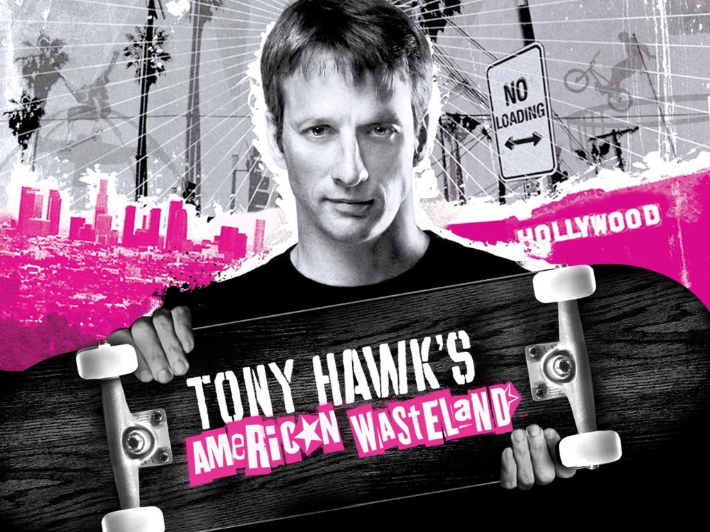

FYC://Tony Hawks Pro Skater Series + Gamecube Emulator (Direct Play)
=-=-=-=-=-=-=-=-=-=-=-=-=-=-=-=-=-=-=

Home
Download/Stream:
Torrent
Magnet
Play now (Stream)
Descption:
Tony Hawks Pro Skater Series + Gamecube Emulator (Direct Play) | 5GB

This pack comes with all Tony Hawk's Pro Skater games for the Gamecube and an emulator. It is ready to go so you just download, extract, and play. I set it up with a generic 360 controller but you can easily change that.